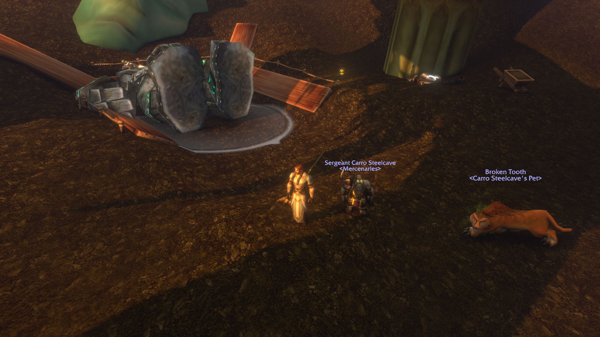
EXCAVATION SITE: WETLANDS · 22 NOVEMBER 2026
Where the
Mountain Remembers.
Beyond the water, the teeth and the burning camp, an ancient guardian waits. Xuthar Morvayne and Carro Steelcave enter a valley of buried ages—and bring their friendship back into the light.
Xuthar · Carro Steelcave · Broken Tooth Original Full HD · 16:38:42
THE LORE · A WORLD BENEATH THE WORLD
The mountain remembers what kingdoms forget.
High above Whelgar’s Excavation, a hidden stretch of the Wetlands draws the Explorers’ League toward unfamiliar lights and ancient titan machinery. The official dungeon setting joins a dwarven search for the past with a valley where dangerous wildlife has made its own kingdom.
The journey changes its scale as it unfolds. Water first reduces the world to the next safe foothold. Tall grass makes a few yards feel like a frontier. At the excavation, fossil bones and immense stonework stretch that frontier across ages. The same traveller who was trying to keep mud out of his boots must suddenly consider how little of Azeroth’s history fits inside a human lifetime.
The Explorers’ League gives that wonder a practical form: a tent, a lantern, a supported trench, a page on which somebody has tried to name a discovery. The exposed cliffs in Xuthar’s journey are especially powerful because the work remains visible. These are places where patient hands have attempted to understand what force alone could never explain.
For Carro, the great construct offers an encounter with stone that carries an older purpose. For Xuthar, it touches the heart of his own story: the responsibility of remembering lives and promises. Their reading of the place belongs to The Last Witness, the site’s original roleplay novel. The friendship, dialogue and reflections give this expedition its personal voice.
“The mountain kept its buried ages. The companions carried one another’s voices into the living afternoon.” — The Last Witness · Chapter 197
THE EXPEDITION BRIEFING
Before entering the hidden valley.
Approach from Menethil Harbor or through Loch Modan and follow the mountain route above Whelgar’s dig. The approach and the portal occupy different elevations. Gather the party before the climb. Although the official range begins at 24, the final encounter is substantially harder; level 26 or above is a more practical starting point for a prepared group.
The route at a glance
- Advance through the wet ground and crocolisk territory to Saltspine.
- Keep to the cleared path through the raptor grass and face Shadetooth.
- Continue past the excavation camp; check relevant quest objectives before leaving each area.
- Prepare the whole party before activating the Relic Guardian’s Archival Panel.
| Encounter | What matters | For Xuthar and Carro |
|---|---|---|
| Saltspine | Tendon Rip slows the target; Dust Storm affects the nearby melee area. Clear surrounding enemies first. | Give ranged attacks room. Keep healing within reach across the water. |
| Shadetooth | Two Thicket Hunters complicate the pull; disease, bleeding and fear punish poor positioning. | Agree on control targets. Preserve a safe retreat and remove disease promptly. |
| Relic Guardian | The panel starts the fight. Thunderclap, knockback and stuns pressure the tank. | Begin with full resources. Keep the party in healing range when the front line moves. |
| Highland Horror | A separate quest encounter associated with Horrors in the Highland. | Check the accepted objective. Its defeat is not recorded in this expedition’s photographs. |
The photographs establish the expedition’s route and aftermath. Combat scenes in the novel are dramatized. This is a dated guide reviewed on 22 November 2026; confirm current quest prerequisites in the game.
QUESTS & POSSIBLE REWARDS
The questions that lead into the mountain.
These are dungeon references for planning a visit. They do not add completions or rewards to Xuthar’s character record.
| Quest or chain | Story connection |
|---|---|
| Highland Hides | James Halloran’s raptor-hide request connects the dungeon’s wildlife to Menethil Harbor. |
| Songblade Search | Dorin Songblade’s search carries a Lakeshire family concern into the excavation. |
| Horrors in the Highland | Rethiel the Greenwarden seeks the Highland Horror’s rootcore. |
| Lost in the Thicket Things · Heartwoven | Caitlin Grassman’s investigation develops into a further personal errand. |
| Lost Relic Carry · Prehistoric Prism | The Titan Relic begins a trail toward Prospector Whelgar and the League’s investigation. |
Possible equipment includes Saltspine’s Glinteye Slippers, Shadetooth’s Raptor’s Gaze, and the guardian’s Ring of Power Regulation or Golemsight Long Gun. These are loot-table examples, not claimed drops. The relic chain offers its own reward choices.
THE LAST WITNESS · CHAPTERS 187–197
The valley, the guardian,
and the friend who waited.
An original roleplay chronicle of the expedition, told in eleven short chapters. Read here or continue in the living book.
Chapter 187
A Friend at the Edge of the Map
Carro was waiting beside the tents with the untroubled expression of a dwarf who had found something dangerous and decided that, naturally, his friend ought to see it. Broken Tooth lifted his head at Xuthar’s approach, sniffed the hem of the pale robe and accepted the priest back into the company. That small recognition undid a weariness Xuthar had carried out of the southern woods.
The morning’s names were still with him: Sven, Jitters, the dead of Raven Hill. He had expected another road of graves and unanswered questions. Instead, the Wetlands stretched beneath a sky that seemed too large for his worries, and somewhere above the expedition camp a mountain was waiting to be opened.
‘You said a walk,’ Xuthar observed. Carro looked toward the high ground. ‘It has walking in it.’ Broken Tooth’s ears turned toward the slope. The dwarf added, ‘Some of it may need to be done rather quickly.’ Xuthar laughed before he could prevent it. It was the first easy sound he had made all day.
They checked their provisions in the shade of the canvas. There was no oath this time, no ceremonial clasp of hands. Carro tightened a strap; Xuthar tested the knot holding his book dry inside its wrapping. The promise had been made long ago, beneath Westfall and Stormwind, and neither man had found a reason to withdraw it. Where one entered, the other would keep a way back.
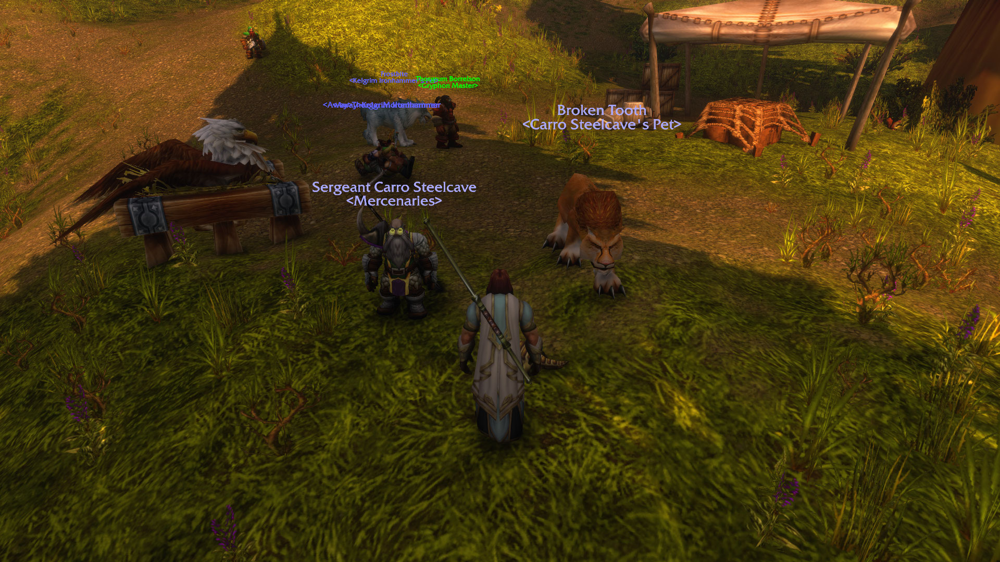

Chapter 188
The Passage Between Two Worlds
The passage narrowed around them. Fire from the braziers ran along the stone in low orange bands, and their footsteps returned from the dark ahead with the hollow confidence of strangers. Xuthar remembered the stairs beneath Stormwind. For a few breaths, the old instinct returned: count the doors, watch the corners, measure how much light remained behind.
Then the mountain released them into open air. Beyond a cobbled rise lay a valley folded into mist, its slopes carrying trees, water and weathered rock. He had prepared himself for a ceiling and found a whole hidden sky. Carro stood at the crest without speaking, one hand resting on the stock of his weapon.
Xuthar had known scholars who could turn a discovery into an argument before anyone had looked at it properly. Here, he understood the temptation. Every slope seemed to offer a different explanation. Water had cut its slow marks through the valley; something older had left shapes beneath the earth that no living mason could have planned.
‘Well?’ Carro asked at last. Xuthar loosened the grip he had kept on his staff. ‘I think we should remember this part.’ The dwarf glanced toward the path below. ‘Before it tries to eat us?’ ‘Especially before that.’ Together they descended, and the torchlit passage became a small dark mouth behind them.
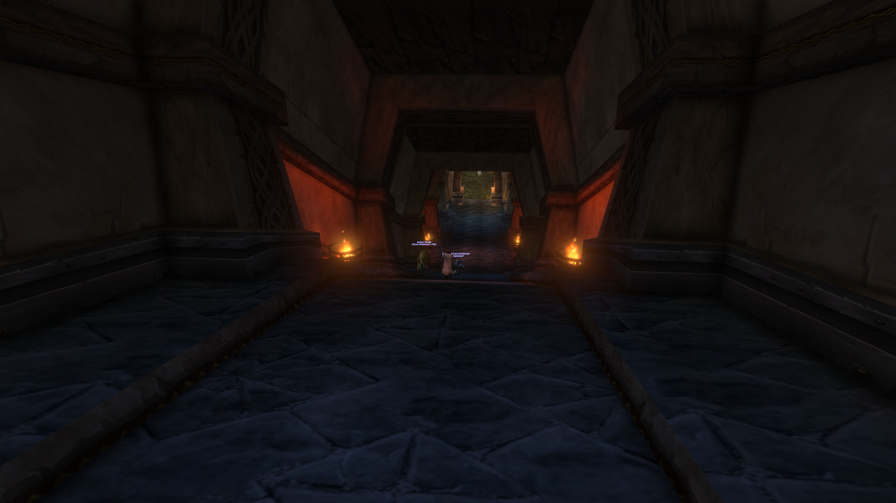

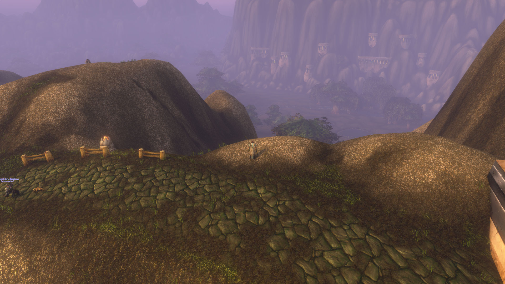

Chapter 189
Where the Water Had Teeth
At first the water appeared almost kind. Broad-backed turtles moved through the shadows, reeds bent beneath the breeze, and the great trees spread their branches as though the valley had never heard of an axe. A line of broken planks drifted across the pool. Xuthar watched one turn slowly and wondered what crossing had once held it in place.
Broken Tooth stopped. Carro stopped with him. The pause travelled back to the priest without a word. A ridge had appeared where no ridge belonged, too straight for a ripple and too patient for debris. Then another shape moved beneath the surface, and the harmless pool became a place full of distances that had to be measured very carefully.
They worked their way forward over ground already tested. Carro watched the reeds while Xuthar watched the spaces between his companions, keeping enough room for a spell and enough closeness for a hand. When movement broke from the water, the company met it together. The clash sent muddy spray over the priest’s sleeves and shattered the reflection of the sky.
Afterward, the floating boards resumed their slow journey. That ordinary motion disturbed Xuthar more than the attack. The valley could swallow a struggle and look peaceful again within moments. He began to understand why an expedition needed more than courage. It needed someone willing to keep looking after the first reassuring glance.
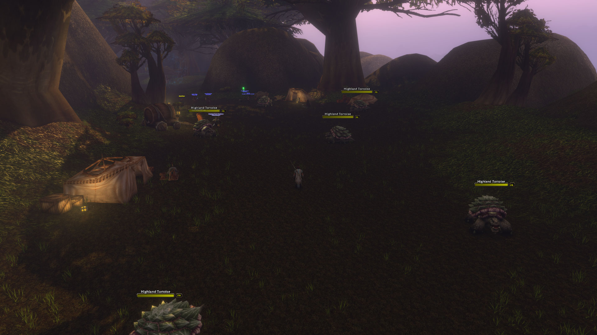

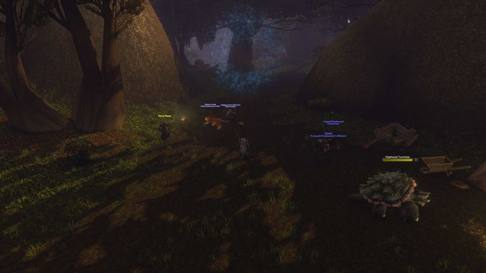

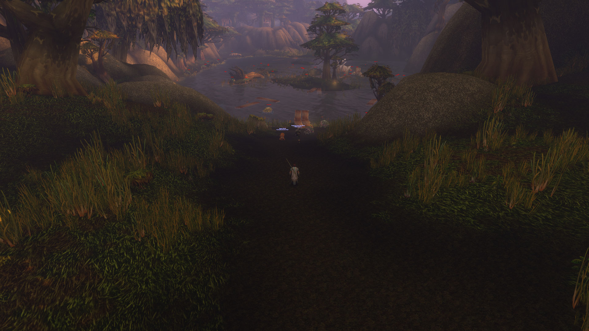

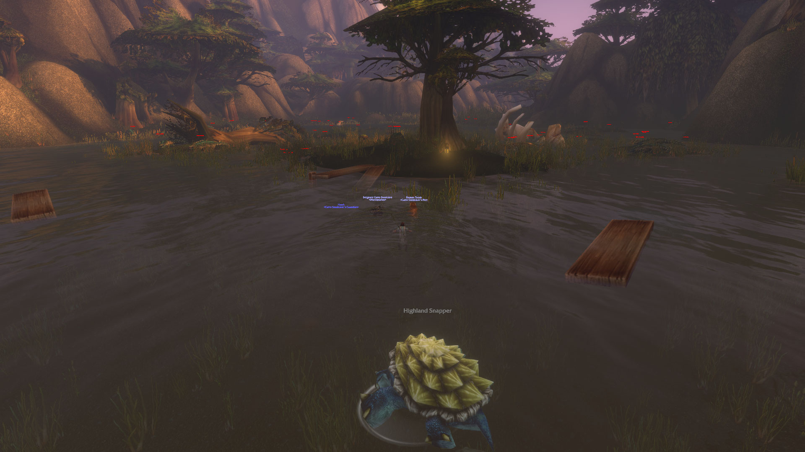

Chapter 190
Saltspine, Lord of the Still Water
Saltspine rose through the brown water with the weight of something that had never needed to hurry. The great jaws opened; the pool folded against its plated sides. Beside it, the other marsh creatures suddenly looked small, like lesser thoughts attending a single immense hunger.
Carro’s first shot cracked across the water. Broken Tooth moved at his signal, a flash of tawny muscle against the mud. Xuthar planted his staff where the bottom offered purchase and called the Shadow into a narrow thread. It answered with its familiar temptation to spread, to take more than the hand had asked. He held it to the creature before him. There were living friends within reach of every careless choice.
The fight broke into fragments: a closing mouth, the pull of water around his knees, Carro calling from the right, a ward flaring just long enough to give someone room. Xuthar lost sight of the dwarf behind a burst of spray and found him again because the next shot came exactly when it was needed. Their old rhythm survived the unfamiliar ground.
When Saltspine finally lay still, Xuthar remained motionless for a moment, breathing with the strange care of a man who had expected his next breath to be interrupted. Carro waded closer. ‘Still a walk,’ the dwarf said. The priest looked at the enormous body between them. ‘You might have mentioned the bathing.’ The laughter that followed was thin with relief, but it belonged entirely to the living.
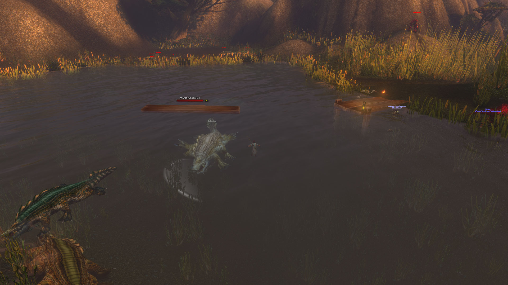

Chapter 191
Shadetooth and the Listening Grass
The grass stood higher than Xuthar’s certainty. Golden stalks closed around the narrow path, hiding movement until it was already near. Carro studied the ground, his expression stripped of its earlier humour. Broken Tooth’s tail had become very still. Somewhere ahead, something answered a call too softly for the priest to place.
Shadetooth came with company. For an instant the path seemed to possess more claws than there was earth to stand on. Carro marked a target, and the companions gathered their strength against it before the circle could close. Xuthar felt the pressure of fear pass through him like a cold hand searching for the heart.
His body wanted to run. The grass offered a hundred directions and concealed every consequence. He fixed his attention on Carro’s voice, then on the next deliberate breath. The dwarf was still there. Broken Tooth was still fighting. Xuthar brought his will back into the small piece of ground they had chosen and refused the wider darkness its invitation.
At last the red shapes lay across the path. The stalks moved gently above them, keeping their secrets. Xuthar lowered his staff and looked toward his friend, who stood beside the cat with one shoulder darkened by sweat. Nothing in the scene resembled a king’s victory painting. Yet the priest knew he would remember it longer than many such paintings: a difficult path, three familiar figures, and room enough to go on.
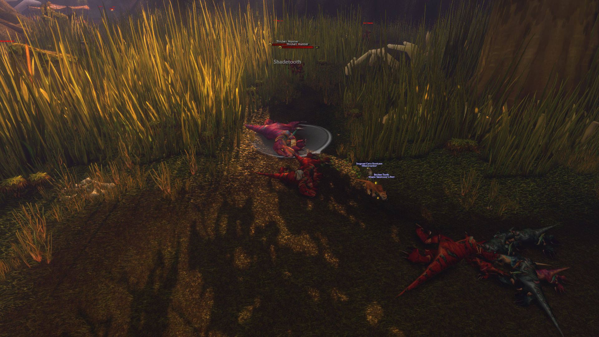

Chapter 192
The Camp Beneath the Bones
Beyond the raptors, the earth carried a different wound. Canvas roofs sagged above the dig; flames clawed at the air around the camp. Dragonmaw figures moved among the shelters. A captive fire elemental burned with a furious, imprisoned brightness, and above it all a great fossil skull watched with sockets into which the afternoon could not reach.
Xuthar stopped beneath the immense jaw. For most of his life, history had arrived in books sized for human hands. Here it had teeth larger than the tools that had uncovered them. The skull had waited while kingdoms rose elsewhere, while fathers named their sons and sons forgot their fathers. Now violence had found it again, smaller than its first death and no less real to those caught within it.
Carro drew his attention back to the living danger. They made their way through the camp with the patience the grass had taught them, refusing a reckless advance between the flames. Broken Tooth kept close where the timber narrowed the route. Each cleared stretch gave them somewhere to stand while they considered the next.
Beside a wooden platform, Xuthar looked back at the fires beneath the bones. He could not restore every broken tool or answer every loss the abandoned camp suggested. He could carry the sight faithfully. In his book, the place would retain more than the names of the creatures they had fought. It would retain the evidence of people who had come here hoping to learn.
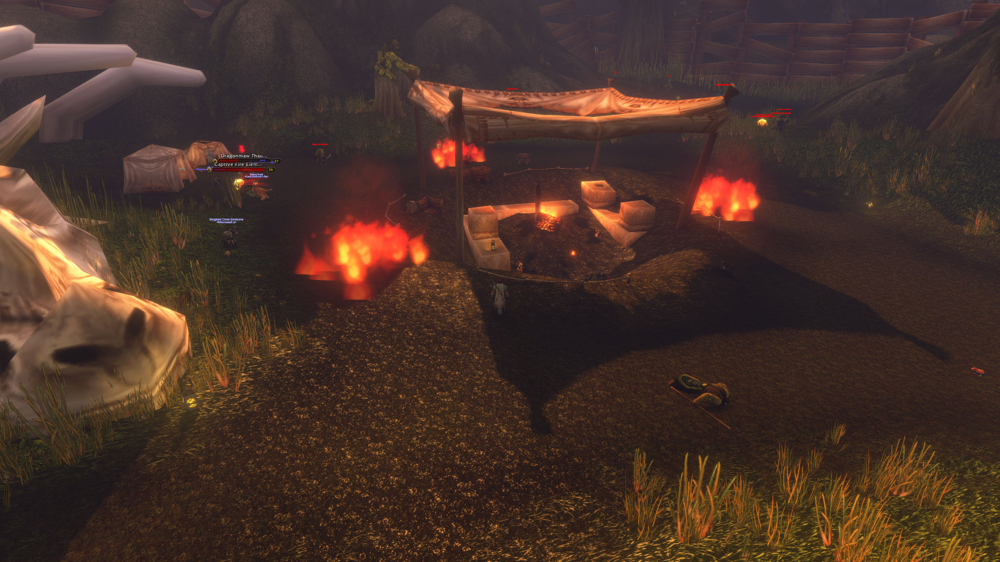

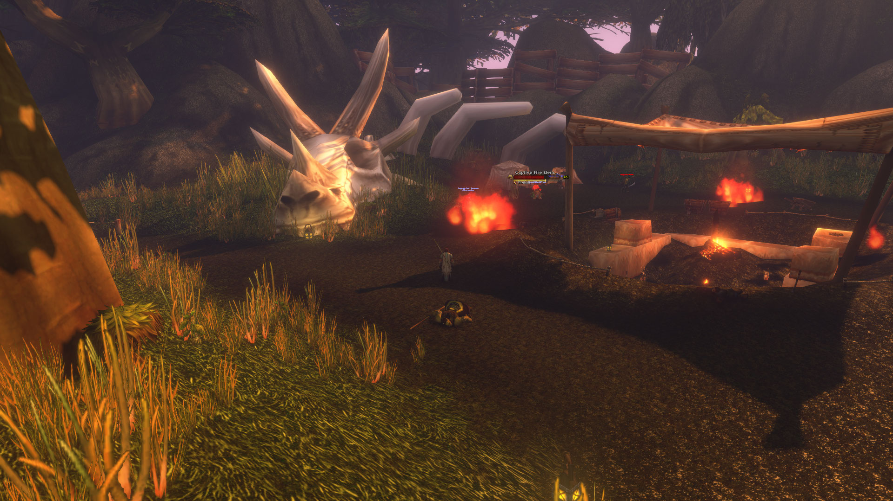

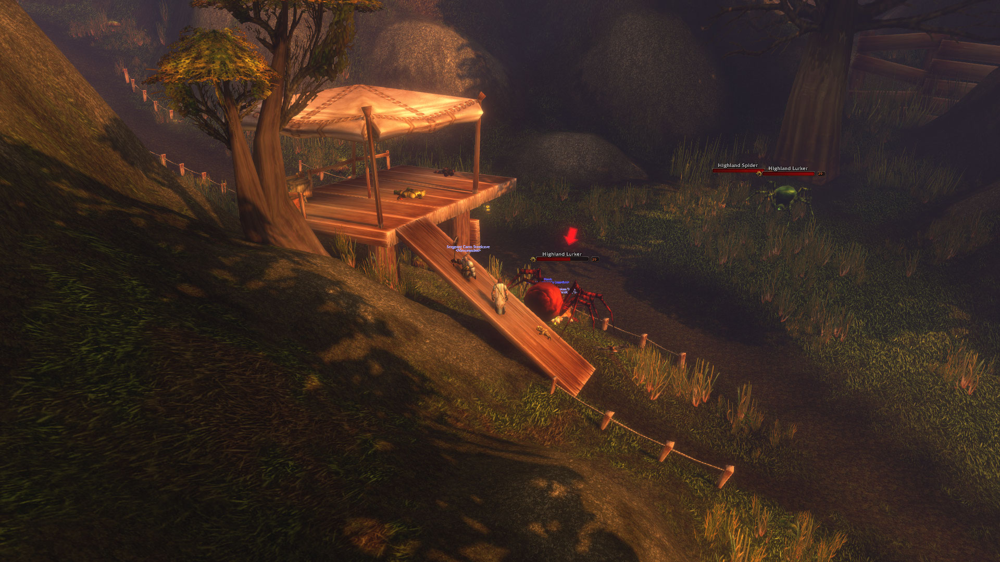

Chapter 193
The Weight of a Forgotten Command
The route tightened into a ravine, its high walls turning the breeze into an occasional visitor. Torches picked out the rough edges of the passage. Then the great construct appeared beyond the timber: stone shoulders, massive hands, a shape made for endurance rather than mercy. The Relic Guardian waited where the expedition’s small canvas shelters looked suddenly fragile.
Carro lifted his gaze along the enormous body. Xuthar watched the dwarf’s face and saw an attention he had not seen in the marsh. For Carro, perhaps, the old stone asked a question that lived nearer the bone. The priest did not presume to answer it for him. He waited until his friend looked back.
‘Someone gave it a duty,’ Carro said. ‘A long time ago.’ Xuthar thought of guards holding the last lamps in Darkshire, of promises surviving the people who had made them. An order could outlast the hand that wrote it. Without judgment or kindness to renew it, that faithfulness could become a terrible thing.
They readied themselves with unusual quiet. The scholar in Xuthar wanted another hour to look, another day to ask what had been protected and why. The traveller could see the ground they would need when the stone moved. He set his questions beside his fear, kept both within reach, and raised his staff. The guardian’s first movement shook dust from the timber.
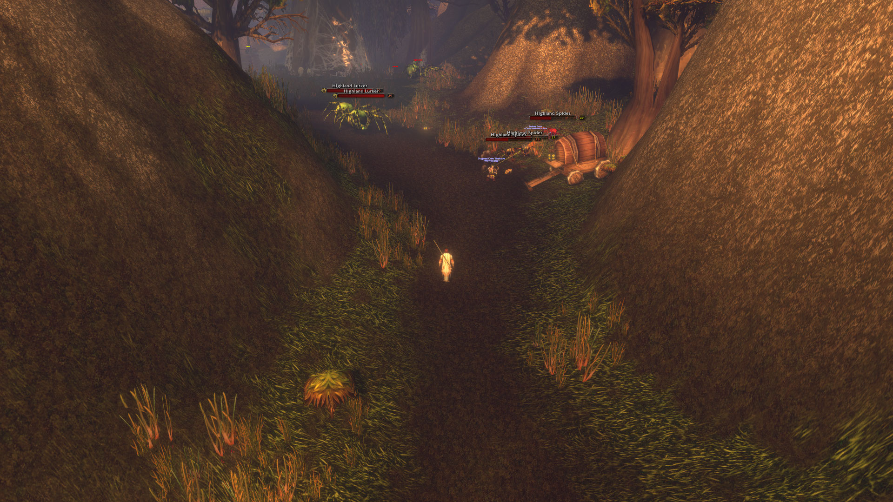

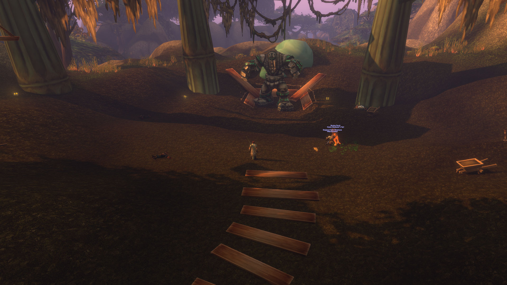

Chapter 194
When the Guardian Fell
The mountain seemed to stand up around them. Stone drove into earth with a sound that struck the chest before it reached the ears. Xuthar stumbled, caught himself, and found that the distance to Carro had widened in a single heartbeat. The dwarf was already moving, calling Broken Tooth clear of the great descending hands.
Every blow demanded a new decision. Xuthar fed the Shadow carefully into the struggle and kept part of his strength for the friend he could not afford to lose. Carro’s answering fire travelled across the clearing. The guardian endured with a patience more frightening than rage; it had no breath to shorten, no fear to make it hesitate.
For a moment, the priest felt the old temptation to surrender judgment to power. Let the darkness finish it. Let everything else become somebody else’s concern. Then he heard Broken Tooth snarl and saw Carro turn, checking for him even while the construct moved. Xuthar chose the smaller, harder task. Keep the company together. Reach the next breath. Strike again.
The fall came as a great undoing. Weight shifted beyond recall, timber cracked, and the enormous body struck the ground. The silence afterward seemed unable to fill the space it had occupied. Xuthar stood with his staff still raised until Carro touched his arm. ‘You can put that down now.’
They took their place beside the fallen giant: the pale-robed priest, the dwarf with the weathered face, the tawny cat settling at their side. Behind them lay a command older than their countries. Before them lay the simple privilege of another road. Xuthar looked at his friend and found, beneath exhaustion, a gratitude too large for ceremony. They had both come through.
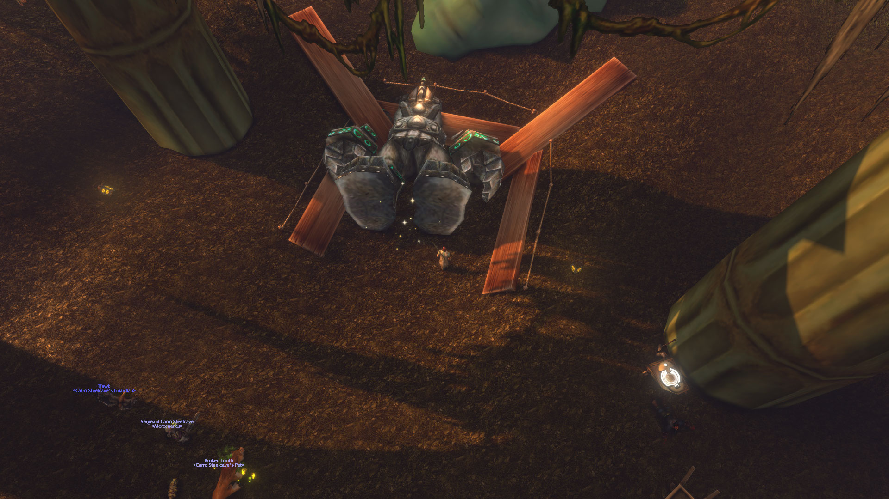


Chapter 195
The Names Beneath the Stone
After the clearing, a cobbled road drew them onward. Xuthar’s hands had begun to tremble with the effort they no longer needed to hide. He let them. Carro walked at the unhurried pace of someone who understood that a surviving companion ought to be allowed to discover his weariness in peace.
Then the excavation opened beneath them. Terraces cut the cliff into great shelves, each held by timber, rope and the stubborn ingenuity of people much smaller than their work. Fossils pressed from the walls. A suspended hook waited over empty space. The mountain had been opened like an enormous book, its pages too heavy to turn.
Xuthar imagined the first careful stroke that had found an unfamiliar curve beneath the dirt. Not a battle cry, not a coronation: a worker stopping, calling another worker over, both trying to understand what their hands had touched. He knew that feeling. It was the reason a recovered name could keep him awake longer than a victory.
Carro pointed out a section of supports on the far wall, and for a while they spoke only of practical things: how the boards had been anchored, where water would run, how much courage it took to trust a rope. Xuthar listened. Wonder did not always arrive as a revelation. Sometimes a friend showed you how a thing had been made, and the world became larger because you had paid attention.
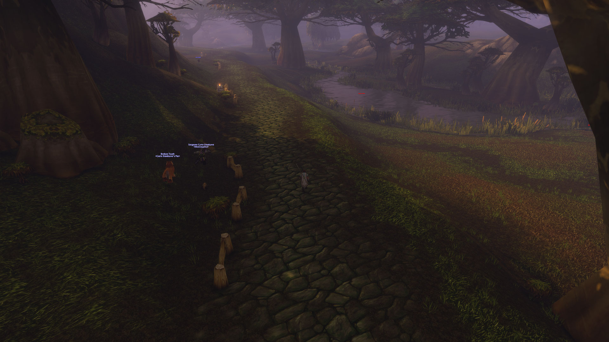

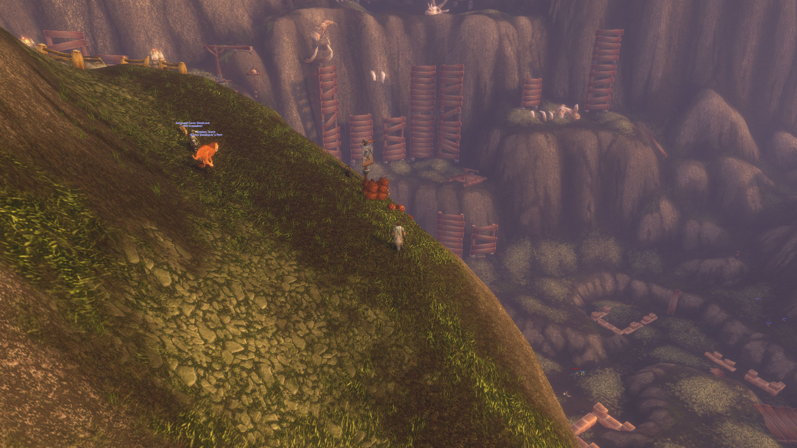

Chapter 196
Two Friends Above the Ages
On the grassy ledge above the dig, the Wetlands spread into a pale distance. The haze softened every ridge without making the height less real. Carro stood beside Xuthar, and for once neither filled the silence. Below their boots lay ages they could barely name. Above them, the afternoon was spending itself in the ordinary way.
The priest thought of the companions they had been beneath Westfall: less certain of one another, carrying hopes that had not yet learned the weight of a shared danger. Since then there had been prison corridors, Redridge slopes, a wounded man brought into daylight, and this hidden valley where stone had risen to bar their way. The map could record the places. It had no symbol for the trust travelling between them.
‘What will you write?’ Carro asked. Xuthar looked down at the supports in the cliff. He might have written that they had stood against the ages and prevailed. It would have sounded splendid. It would have left out the fear, the muddy sleeves, the cat’s stubborn presence and the fact that his friend had checked for him when it would have been easier to look only forward.
‘That you waited,’ he said. Carro glanced sideways. ‘I do that rather a lot.’ ‘I know.’ The dwarf accepted the answer with a small nod. After a while he turned toward the bridge, and Broken Tooth rose to follow. Xuthar gave the vast open valley one last look before joining them. There were still people waiting at the other end of the road.

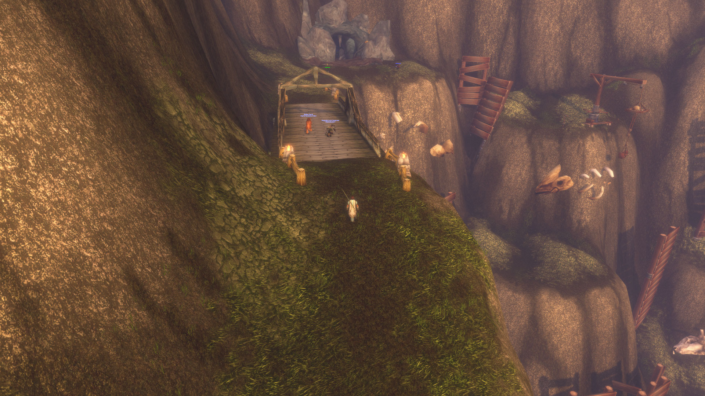

Chapter 197
What the Mountain Let Them Carry
The cave offered a cooler darkness, a welcome one. Mushrooms caught the faint light along the walls, and figures of the Explorers’ League waited beyond the entrance. Merrik Rockweaver’s name reached Xuthar before the rest of the voices settled into words. After the valley’s teeth and stone, the sight of people attending to ordinary work felt unexpectedly precious.
He paused while Carro stepped nearer the explorers. Broken Tooth moved between them with the air of a creature who considered introductions complete as soon as everyone had been smelled. Xuthar allowed himself a smile. Whatever answers the expedition might eventually make of the place, this moment already belonged in the book: knowledge continuing because someone had come back to speak.
Later, on the open path, the afternoon rested on fences, trees and wet ground. The valley’s noises returned one by one. Xuthar loosened the wrapping around his ledger and found a dry page. For a time he wrote only names. Carro Steelcave. Broken Tooth. The explorers beneath the mountain. Then he added the places and the great dangers that had stood between them.
He left a little space after each name. There would be other days, other roads, things worth knowing that no victory could contain. The Wetlands had given him a glimpse of a world whose memory ran deeper than any graveyard. His part in it remained small enough to hold in his hands.
Ahead, Carro called that they should keep moving while the light was good. Xuthar closed the book and followed. The mountain kept its buried ages. The companions carried one another’s voices into the living afternoon.
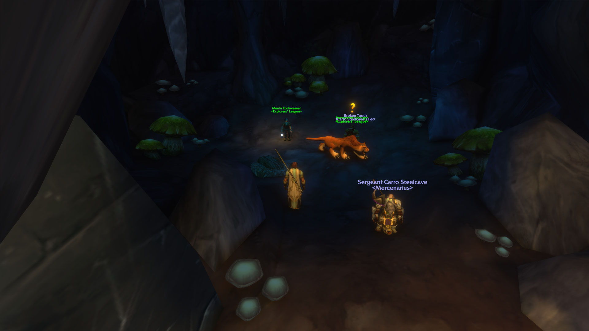

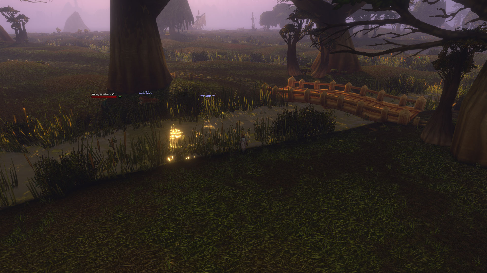

THE COMPLETE PHOTOGRAPHIC CHRONICLE
Every frame, in the order it was taken.
All 22 original files are published above beside their scenes, unchanged at 1920×1080. Use the index to jump to a frame, then open or save its full-size original.
- 16:11:46 · A friend at the expedition camp
- 16:13:37 · The torchlit passage
- 16:14:46 · The valley beyond the threshold
- 16:15:52 · The marsh before the first battle
- 16:16:10 · Carro on the wetland path
- 16:16:39 · Water beneath the great trees
- 16:17:08 · The broken crossing
- 16:20:28 · Saltspine defeated
- 16:24:11 · Shadetooth defeated
- 16:33:04 · The fire in the excavation camp
- 16:33:11 · Fire beneath the fossil skull
- 16:34:15 · The timber platform
- 16:34:53 · The ravine of torches
- 16:36:54 · Before the stone guardian
- 16:38:03 · The Relic Guardian fallen
- 16:38:42 · Honour to the companions
- 16:44:25 · The road after the battle
- 16:46:55 · The mountain opened like a book
- 16:46:58 · Two friends above the ages
- 16:47:04 · The bridge above the dig
- 16:47:23 · The Explorers’ League refuge
- 16:49:42 · The living world beyond the stone
SETTING & FIELD REFERENCES
Behind the chronicle.
The official setting and published dungeon range come from Blizzard. Encounter and quest references are linked below. The player-supplied photographs establish this expedition’s sequence; dialogue, inner thoughts and connective action are original fiction. Xuthar’s last confirmed level is 25. The morning’s quest snapshot remains dated separately; no new quest count or particular loot award is inferred here.